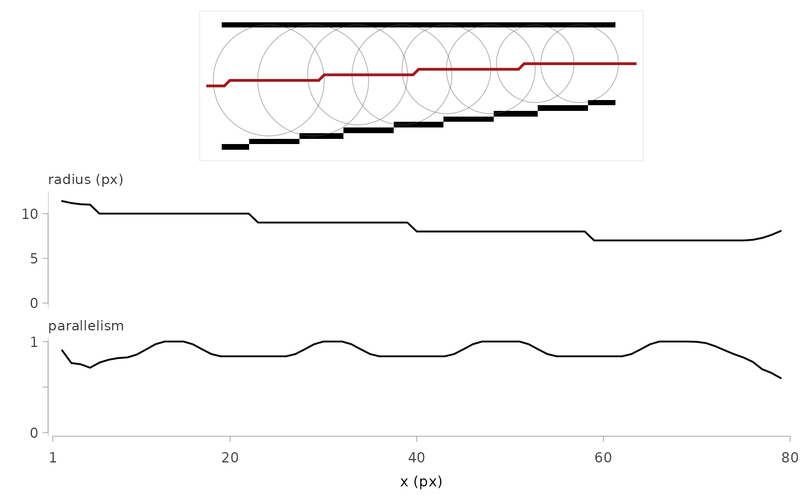

Plot branch quantities under the drawing they come from
Source:R/plot-profile.R
plot_branch_profile.RdDraws each medial-axis representation as a column: the ink and the chosen branches on top, and below it one panel per quantity, plotted against the image x coordinate on the same horizontal scale as the image. A point on a branch and its score therefore lie on the same vertical line, so a reader can look straight down from a feature of the drawing to its effect on the score. Positions on the y axis are easier to compare than colours, which makes small differences between branches readable.
Usage
plot_branch_profile(
x,
what = "parallelism",
branches = NULL,
discs = 0,
col = NULL,
ylim = NULL,
band = NULL,
labels = TRUE,
main = NULL,
panel = NULL,
cex = NULL,
lwd = 1.6,
context = FALSE,
blank = character(),
stack = FALSE
)Arguments
- x
An `mlv_mat` scored by [compute_mat_properties()], or a list of them (one column each; list names become column titles).
- what
Branch quantities to plot, one row each: `"radius"` or any score present in the branches, for example `c("parallelism", "separation")`.
- branches
Which branches to show: `NULL` (all), `"longest"`, an integer vector of branch indices used for every column, or a list with one such entry per column.
- discs
Draw the maximal inscribed disc at every `discs`-th point of the shown branches (see [plot.mlv_mat()]); `0` draws none.
- col
Colours of the profile curves, recycled over the columns; the default is black. Where a column shows several branches, they are told apart by line type and by their index at the line ends. The axis in the drawing row is always drawn in the medial-axis colour (the skeleton red of `plot(x, "skeleton")`), half a pixel wide, whatever `col` is.
- ylim
Optional y limits: one numeric pair for every row, or a named list of pairs keyed by `what`. The default is `c(0, 1)` for scores and from zero to the largest value for `"radius"`.
- band
Optional x range (two numbers, in pixels) shaded in every panel, drawing included, for example the stretch over which a summary is computed.
- labels
Label each line with its branch index at its right end when a column shows more than one branch.
- main
Column titles; the default is `names(x)`.
- panel
Optional function called after each panel is drawn, with the panel's coordinate system active, as `panel(column, row)`: `column` is the column index and `row` is `"drawing"` or one of `what`. Use it to add annotations.
- cex
Text size; the default scales with the device width.
- lwd
Width of the profile lines.
- context
Draw the other columns' curves faintly behind each profile, so that every column can be compared with the rest: `TRUE` for every row, `FALSE` for none, or the names of the rows to give context.
- blank
Names in `what` that are not branch quantities but empty rows, drawn with only their row label on the shared x scale, for `panel` to fill (for example a diagram of fitted spans). Their y range is 0 to 1.
- stack
Place the columns one below another instead of side by side, each at the full device width (useful on narrow devices or when a drawing needs labels).
Value
Invisibly, a data frame with one row per plotted point: `column`, `branch`, `what`, `x`, `y` (image coordinates of the branch point) and `value`.
Details
The figure fills the current device page, like [graphics::pairs()]. Panel heights follow the image's aspect ratio, and text size follows the device width (smaller on narrow devices). The graphics state is restored on exit.
Examples
d <- mlv_drawing(list(matrix(c(5, 8, 75, 8), 1),
matrix(c(5, 30, 75, 22), 1)), 80, 36)
m <- compute_mat_properties(compute_mat(d), c("parallelism", "separation"))
plot_branch_profile(m, c("radius", "parallelism"), branches = "longest",
discs = 8)
